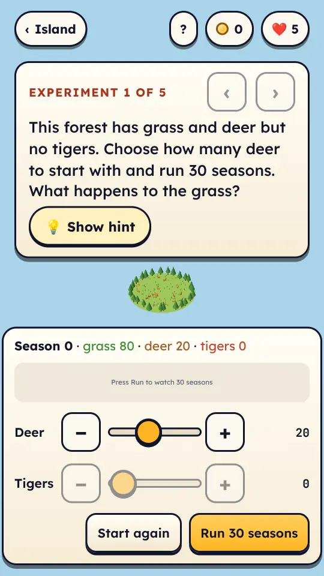

All labs › Biology › Ecosystem
Biology lab · Bittu's Pond
Ecosystem
पारितंत्र · घास, हिरण, बाघ
Run a small world of grass, deer and tigers over many seasons. Change the numbers and watch the populations rise and fall until they reach a balance.
- Biology
- Inventor · ages 10+
- 5 levels
- English · हिंदी
- Free, no sign-up

How it works
Grass, deer and tigers
- With grass and deer only, the deer multiply and eat all the grass. Then they starve.
- Add a few tigers. They eat some deer, so the grass survives.
- Run 30 seasons. A balance means all three are still alive at the end.
Stuck? Every level has a hint, and a "Show me" walk-through.
Why it works
The big idea
An ecosystem is like a see-saw with many seats: too many deer and the grass runs out; too many tigers and the deer disappear. Every animal and plant keeps the others in check.
What children learn
Skills in this lab
- Food chains: producers, herbivores and predators
- How predators keep populations in balance
- What happens when one species is removed
For parents and teachers
This lab is in the Inventor band (ages 10+). Each player picks a band, and sees only the labs made for it.
Curio Island is free in the browser with no sign-up. Progress is saved on this device only. Ads are child-safe and non-personalised, and never appear inside a lab.
Part of Bittu's Pond on the island. 5 levels to finish.